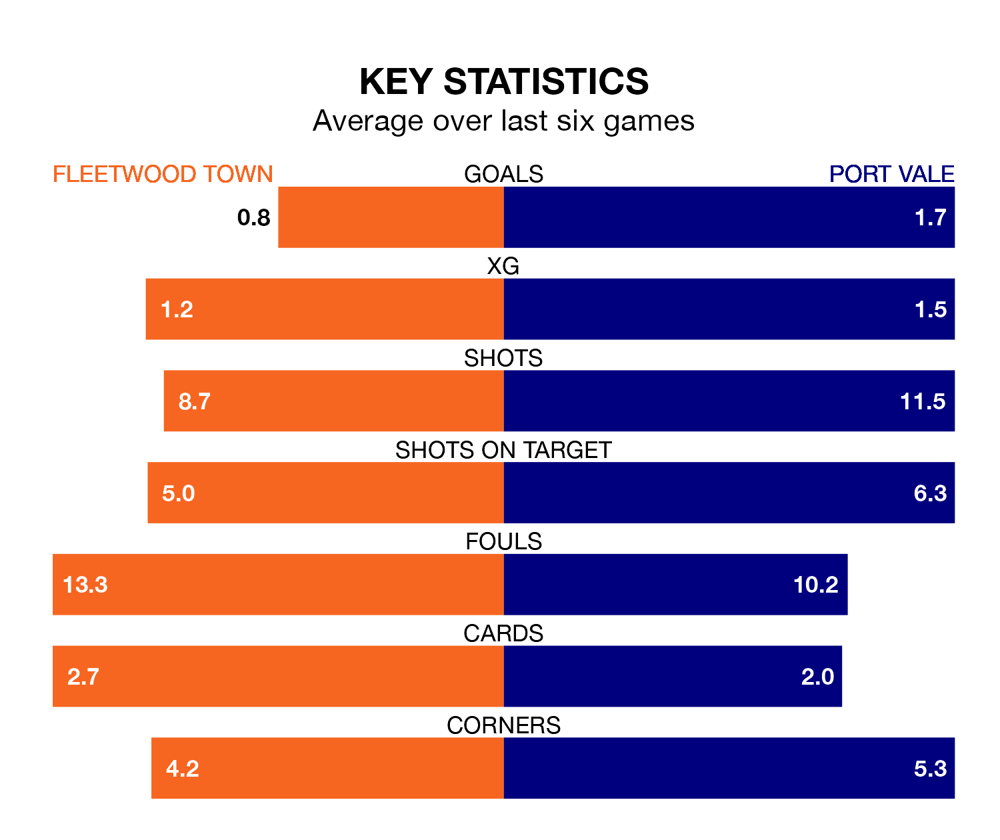

Saturday's match at the Highbury Stadium sees two relegation candidates play each other, as bottom of the table Fleetwood Town host 21st-placed Port Vale.
Fleetwood have picked up 19 points from their first 19 EFL League One games, with four wins and seven draws.
That is 11 points less than the Valiants have collected, having won eight and drawn six.
Fleetwood are in terrible form in EFL League One, with no wins and a draw from their last six games.
With a win and two draws over that period, Vale's form is better – they have taken five points from 18, compared to Town's one.
In the last 10 years, Fleetwood and Vale have played each other on 10 occasions. Fleetwood won three of them, Vale four, and they drew three times.
On average, the Cod Army scored 1.1 goals and the Valiants 1.2 in those matches.
Their last meeting was on August 8, when Vale won 3-2 at home.
With 25 goals in 28 games so far this season, the Cod Army are scoring at below the league average rate with 0.9 goals per game. And they are conceding more than average, letting in 50 goals at a rate of 1.8 per game.
The Valiants are also below average scorers, with 1.1 goals per game, compared to a league average of 1.3. They have conceded 1.5 goals per game.
The away team's Ethan Chislett is among the league's most creative players, racking up seven assists in 23 appearances so far this season, and holding fourth spot in EFL League One's assist charts.
For the hosts, Danny Mayor has set up the most goals, having laid on three assists in 20 games.
Fleetwood's last match was on January 27, a 2-2 draw against Wycombe Wanderers, with Jayden Stockley and Promise Omochere getting the goals for the Cod Army.
Vale lost 1-0 against Portsmouth last time out, also on January 27.
Updated: 10:03 (UTC), 30/01/24